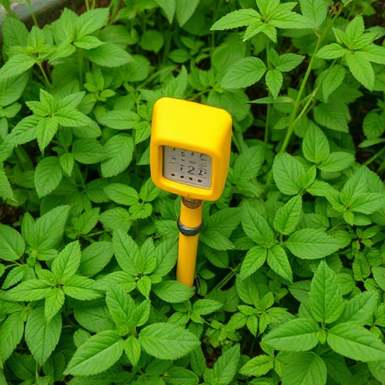

In the future, we plan to maintain our environment by implementing new technology that could save many plants in the world
Greenhouses
A greenhouse is a structure designed to grow and protect plants by creating a controlled environment. Typically made with transparent materials like glass or plastic, it allows sunlight to enter while trapping heat inside. This creates a warmer and more stable climate than the outside, which helps plants grow year-round, even in colder seasons. The structure shields plants from harsh weather, pests, and temperature fluctuations. Greenhouses can vary in size from small backyard setups to large commercial facilities. They often include systems for ventilation, irrigation, and temperature regulation to optimize growing conditions. The trapped heat inside comes from the sun’s rays warming the interior, and the enclosed design prevents the heat from escaping quickly. This process, known as the “greenhouse effect,” mimics how Earth's atmosphere retains warmth. Greenhouses are widely used in agriculture, horticulture, and research to grow vegetables, flowers, and other crops efficiently.
Plant Lamp
A plant lamp, also called a grow light, is an artificial light source designed to support plant growth by providing the specific wavelengths of light that plants need for photosynthesis. These lamps are especially useful for indoor gardening or in places with limited natural sunlight. Most plant lamps emit light in the blue and red parts of the spectrum, which are the most effective for vegetative growth and flowering. Blue light promotes leafy growth, while red light encourages blooming and fruiting. There are different types of plant lamps, including LED, fluorescent, and high-intensity discharge (HID) lights. LED grow lights are the most energy-efficient and long-lasting, often customizable to emit specific light spectrums. Fluorescent lamps are inexpensive and good for seedlings, while HID lights are powerful and suited for larger growing areas. Plant lamps are commonly used in homes, greenhouses, and research labs. They allow gardeners to grow herbs, vegetables, or flowers indoors all year round, regardless of weather or daylight availability. Proper distance and timing are essential for effective light exposure.

Plant Health detector:
A plant health detector is a system or tool—often using sensors, cameras, or software—that assesses the condition of a plant to determine if it’s healthy or suffering from stress, disease, nutrient deficiencies, or pests. These detectors can range from simple handheld devices to advanced AI-powered platforms. With this, you can detect how long a plant has left, how much water is put into it and if it has any pollutants in it.
This device allows to regulate water in plants. SOmetimes, people may put too much or too little water which could affect your plant. This will collect and add water if necessary. If you att too mch or too little water, your pant won't be able to survive